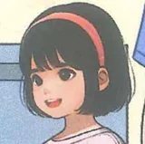

Tổng quan & Mục tiêu khoá họcXem thêm
Cuốn sách này có gì?
Vui học tiếng Việt – Quyển 1 là bước đầu tiên để các bạn nhỏ nghe hiểu, nói được và nhận ra mặt chữ tiếng Việt. Cuốn sách đi từ những điều gần gũi nhất quanh bé:
- Gia đình (Bài 1–5): Đây là ai? · Con chào mẹ ạ. · Em làm gì đó? · Bố mẹ em thế nào?
- Thiên nhiên (Bài 6–10): Kia là con gì? · Cây cam có mấy quả? · Con hổ đang làm gì?
- Trường lớp (Bài 11–15): Em có biết vẽ không? · Hình này là hình gì? · Hôm nay là thứ mấy?
- Cộng đồng (Bài 16–20): Cô ấy làm nghề gì? · Trường em ở đâu? · Xe nào nhanh hơn?
Tổng cộng 20 bài: 16 bài học mới và 4 bài ôn tập, mỗi chủ đề khép lại bằng một bài ôn.
Mỗi bài học gồm
- Từ ngữ: nhìn tranh, nghe và nhắc lại.
- Hội thoại: nghe các bạn trong sách nói chuyện, rồi đóng vai hỏi – đáp.
- Tiếng Việt vui: trò chơi, bài hát.
- Học chữ: nghe tên chữ, nhắc lại, tìm và tô màu chữ.
Học xong Quyển 1, bé có thể
- Nghe hiểu các câu nói hằng ngày về gia đình, con vật, đồ vật, trường lớp và nghề nghiệp.
- Nói câu ngắn để giới thiệu (“Đây là mẹ tôi.”), chào hỏi lễ phép (“Con chào mẹ ạ.”) và hỏi – đáp (“Kia là con gì?”).
- Dùng đúng từ xưng hô trong họ nội, họ ngoại, và biết rằng có nơi gọi “bố, mẹ”, có nơi gọi “ba, má”.
- Nhận ra toàn bộ bảng chữ cái và các chữ ghép như ch, gh, gi, kh, ng, ngh, nh, qu, th, tr, từ a, ă, â đến s, x, v.
- Nói về thời gian, màu sắc, hình dạng và số lượng đơn giản.
- Tự tin và yêu thích tiếng Việt: đây là nền tảng để sang Quyển 2 bắt đầu đọc và viết.
Mỗi bài xây trên bài trước. Học trọn 20 bài theo thứ tự thì bé có đủ vốn từ và đủ mặt chữ để bước sang Quyển 2 một cách nhẹ nhàng.
Bạn đồng hành trong sáchXem thêm

Các bạn ơi, trong sách có nhiều bạn nhỏ sẽ cùng học, cùng chơi với các bạn đấy. Mình giới thiệu nhé!— Trâu Con
- Nam
Cậu bạn hay hỏi, hay kể chuyện. Nhà Nam có bố, mẹ và chị Liên. Nam còn dẫn các bạn đi thăm họ nội, họ ngoại của mình.

MaiCô bạn vui vẻ, thân thiện. Nhà Mai có ba, má, anh Dũng và em nhỏ. Các bạn sẽ được dự sinh nhật Mai cùng cả lớp.
- Anh Dũng
Anh trai của Mai, hay dẫn hai em đi chơi, đi vườn thú.
- Các bạn cùng lớp và cô giáo
Lan, Tùng, Hương… cùng cô giáo sẽ gặp các bạn ở trường, ở sân chơi.
Nam gọi “bố, mẹ”, Mai gọi “ba, má”. Nhờ hai bạn, bé biết được cả hai cách gọi của người Việt.
Hướng dẫn cho Cha mẹ & Giáo viênXem thêm
Mỗi buổi học
- Ngắn và đều: 15–20 phút mỗi lần, 3–4 lần một tuần, tốt hơn học dồn một buổi dài.
- Ngồi cùng bé, nhất là với các bé 5–7 tuổi. Bé cần người cùng hỏi – đáp.
- Theo thứ tự trong bài: Từ ngữ → Hội thoại → Tiếng Việt vui → Học chữ.
- Bật âm thanh: bé nghe giọng đọc chuẩn rồi nhắc lại thành tiếng. Nói to quan trọng hơn bấm đúng.
Đồng hành hiệu quả
- Đóng vai cùng bé: cha mẹ làm Nam, bé làm Mai, rồi đổi vai.
- Đưa bài học vào đời sống: học xong bài gia đình thì chỉ ảnh nhà mình và hỏi “Đây là ai?”.
- Khen nỗ lực, không chỉ khen kết quả: “Con nói to và rõ quá!”
- Bé làm sai thì gợi ý nhẹ nhàng, rồi cho bé thử lại. Không làm thay bé.
- Đừng bỏ bài Ôn tập: đây là lúc bé ghép các phần đã học lại với nhau.
Với giáo viên
- Mỗi chủ đề (5 bài) có thể dạy trong khoảng 3–5 tuần, tuỳ nhịp lớp.
- Dùng phần Hội thoại để luyện nói theo cặp trên lớp, còn Học chữ và Tiếng Việt vui giao cho bé làm ở nhà.
Sao, khoá bài và dữ liệu
- Xong mỗi bài tập, bé được một ngôi sao. Bé cần đủ sao ở một bài thì bài tiếp theo mới mở. Nếu đổi máy, hoặc thầy cô muốn cho học trước, người lớn bấm vào bài đang khoá và trả lời một phép tính nhỏ để mở.
- Nút ghi âm giúp bé nghe lại giọng mình để so với giọng mẫu. Bản ghi âm và ảnh gia đình chỉ nằm trên máy của bạn, không được gửi lên mạng.
- Nếu có sách giấy, bạn có thể bấm “Xem trang sách” trong mỗi bài để đối chiếu.
Danh sách bài học
Các bạn học giỏi quá! Nam và Mai đang chờ các bạn ở Bài 2 đấy. Các bạn nhờ bố mẹ đăng nhập giúp nhé, mình sẽ cất sao cho các bạn.
Bé đã sẵn sàng cho hành trình 20 bài?
Vui học tiếng Việt là một phần của Trường Tiếng Việt Của Em – dự án phi lợi nhuận dành cho mọi gia đình. Chỉ cần đăng nhập một lần để:
- mở trọn bộ các bài tiếp theo;
- lưu sao và tiến độ học của bé;
- cùng nhà trường giữ học liệu này luôn an toàn cho cộng đồng.
Chỉ mất chưa đến một phút.
Lưu ý về sử dụng tài liệu · Terms of use
Các trang sách, hình ảnh và bản ghi âm trên trang này thuộc bộ sách Vui học tiếng Việt (© nhóm tác giả và Nhà xuất bản Đại học Sư phạm TP. Hồ Chí Minh). CVCEC chuyển thành bản tương tác và đăng tải với sự đồng ý của Nhà xuất bản, nhằm mục đích học tập, và có thể được dùng cho nghiên cứu về tiếng Việt như một ngoại ngữ. Các nhà nghiên cứu ngôn ngữ muốn tìm hiểu thêm xin liên hệ contact@cvcec.org.
Trang học thuộc dự án phi lợi nhuận Trường Tiếng Việt Của Em. Tài liệu không được sử dụng vào mục đích thương mại, và không được sao chép, tải xuống hay chia sẻ lại dưới bất kỳ hình thức nào khi chưa có sự đồng ý bằng văn bản của CVCEC và Nhà xuất bản.
The textbook pages, pictures and recordings on this site come from Vui học tiếng Việt (© the authors and Ho Chi Minh City University of Education Publishing House). CVCEC publishes this interactive version with the publisher's permission for learning purposes, and it may be used for research on Vietnamese as a foreign language. Language researchers who would like more information may contact contact@cvcec.org.
This site is part of Trường Tiếng Việt Của Em, a non-profit project. The materials may not be used for any commercial purpose, and may not be copied, downloaded or shared in any form without written permission from CVCEC and the publisher.